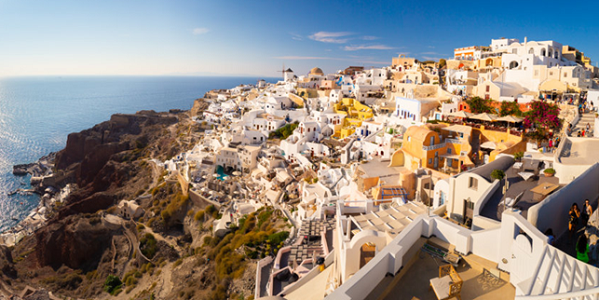
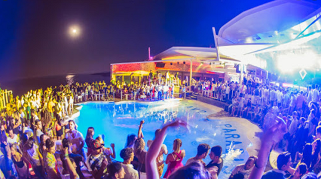
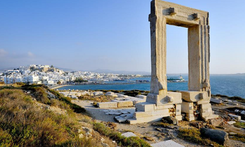

1. Santorin.
L’île romantique où des milliers de personnes viennent admirer le superbe coucher de soleil tous les jours.
2. Mykonos.
Pour faire la fête toutes les nuits au son des meilleurs Dj du monde entier.
3. Naxos.
La plus grande île des Cyclades, qui possède plusieurs jolies plages.
4. Tinos.
Ses villages perdus dans les montagnes vous séduirons si vous souhaitez vous évader.